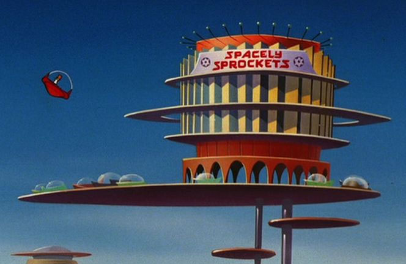

Spacely Sprockets spends several days each week sprouting sprockets for specialty sprocket industries. Led by owner Cosmo Spacely, Spacely Sprockets commands continuous production which keeps competitors like Cogswell Cogs from creating cogs to rival Spacely Sprockets’ significantly superior selection of sprockets.
Sprockets range from small to super stupendous in size and satisfy special specifications of several sprocket-using industries. Unlike Cogswell Cogs, Spacely Sprockets can create custom or specialty sprockets to accurately accommodate any and all applicable applications. Industries served by Spacely Sprockets include sabotage, sales, salvage, science, staffing, security, and shipping, to name a few. To receive top tier treatment and find specialty sprockets, stop in soon and shop with Spacely Sprockets.
